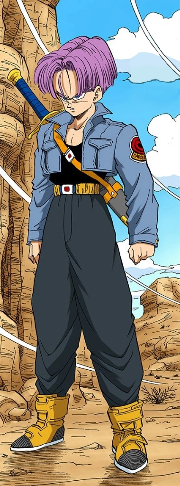

Future Trunks is a Saiyan-Earthling hybrid and the son of Vegeta and Bulma, both from an alternate future.
By the time Present Trunks was born, the timeline had been drastically altered by Future Trunks' and Cell's trips to the past.
Therefore, the two Trunks had completely different lives (as opposed to those who lived before the Time Machines arrived, who lived exactly the same lives as their counterparts until the point at which the two timelines diverge, three years before the androids arrived).
Well-mannered, serious, and very cautious, Trunks hails from an alternate timeline in which Future Androids 17 and 18 murdered the Dragon Team and proceeded to create an apocalyptic anarchy on Earth.
Trunks is trained by Future Gohan as a teenager and becomes a gifted fighter, swordsman, and a Super Saiyan, which are traits that aid him greatly in the battle against the Androids after traveling back in time in order to save his own future.
More than 10 years later, Future Trunks would return in Dragon Ball Super, this time fighting against a mysterious entity referred to as Goku Black (and later his counterpart) wreaking havoc in the future.
In the end, Trunks (with the help of Goku and Vegeta) neutralizes the threat, though unfortunately, Zamasu not only survives the ordeal, but he becomes an even bigger threat, to the point that Future Zeno was needed to erase him.
Trunks himself is one of the three survivors and is currently living in another future timeline where another Future Trunks exists - created in the anime by Whis warning Future Beerus ahead of time to eliminate the soon-to-be rogue Supreme Kai, while in the manga Trunks and Mai travel to their timeline's past and prevent Future Shin's death with the blessing of Beerus as it will save his counterpart, thus eliminating the possibility of the Project Zero Mortals.
Trunks, having never met his father, nor grown up under his influence, combined with the fact that he grew up in an apocalyptic world, is very cautious, broody, and serious (such as when he begged Vegeta not to challenge the Androids without Goku being present or when he did not want Vegeta to trust Paragus),
unlike his main timeline counterpart, who had a personality very similar to his father's.
Due to living in such harsh times and trying to find any means necessary to destroy the androids, Trunks lacks the arrogance and pride of Saiyans like Goku and Vegeta and uses methods unbecoming of a traditional Saiyan warrior.
Examples include suggesting that Goku eat a Senzu Bean during his fight against Perfect Cell, attempting to destroy present Androids 17 and 18 before they could be activated, tries to attack Cell while transforming and kills Babidi and Dabura without allowing them to free Majin Buu from the seal.
This contrasts his present-day counterpart, who arrogantly stated he intended to fight Goten with one hand on one occasion.
Owing to his desire to defeat the Androids by any means necessary, he also was willing to delay an action should it allow him to unearth a means to destroy the androids for good.
This is best demonstrated when he and Krillin arrived at Gero's underground lab area: Krillin was opting to immediately destroy the lab, only for Future Trunks to tell Krillin to not do so yet due to wanting to investigate the lab to see if there were any blueprints of the androids that could point to a weakness.
Future Trunks clearly fears the Androids, panicking at the introduction of Android 16.
He also appears to be afflicted with a degree of post-traumatic stress as a result of the struggles he faced in his apocalyptic nightmarish world.
Nevertheless, Future Trunks is depicted as incredibly respectful to everyone, especially his mother Future Bulma and his master Future Gohan.
When he finally meets Vegeta in the past, Future Trunks is seen to be constantly trying to impress him.
This is often mixed with disgust and horror towards his father's uncaring attitude towards others, especially when Vegeta refused to save Bulma and baby Trunks when Dr. Gero blows up their capsule airplane, forcing Future Trunks to save his present counterpart and mother.
Due to this disposition, he refers to Vegeta and Bulma as "Father" and "Mother" respectively, as opposed to "Papa" and "Mama" which his counterpart usually calls them in the Japanese version.
In the English dub of Dragon Ball Z Kai and Dragon Ball Super, he now often refers to both his parents as "Mom" and "Dad" like his counterpart does.